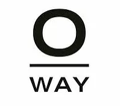

PRODUKTER
Du kan med garanti forvente, at vi bruger de bedste kvalitetsprodukter til dit hår, når vi arbejder. Alle de produkter vi arbejder med og bruger er uden parabener. Vi har udvalgt nogle af de bedste og reneste produkter på markedet, uden at gå på kompromis med kvalitet og effekt.
Hos Cosmo Coiffure ønsker vi at give dig den bedste vejledning til gode produkter, der passer til dit hår, derfor anbefaler vi at du ikke bare tager den tilfældige shampoo ned fra hylden.
Vi oplever ofte at vores kunder har problemer med at håret klasker eller at det stadig er tørt og ødelagt, selvom det lige er blevet klippet. Denne udfordring kan ofte nemt løses, ved at bruge de rigtige produkter.
Alle vores produkter ligger på et rimeligt prisleje, hvor alle kan være med.
Du er altid velkommen til at kigge forbi salonen og få en GRATIS vejledning, omkring hvad netop dit hår, har brug for. Hvis dit hår er sundt og lækkert bliver det nemmere at style og pleje i hverdagen - samtidig vil der ikke skulle klippes så meget af din længde næste gang, du skal i frisørstolen.

Olaplex
Olaplex er et nyt patenteret produkt der helt unikt kan gå ind i håret og genopbygge de nedbrudte byggesten i håret og linke dem sammen igen. Det gør at håret bliver styrket og ikke spalter og knækker så let.
Læs mere om olaplex her 0 WAY FARVER
Vores farvesystem er O way, som er et biodynamisk ammoniakfri farvesystem. Vi har valgt disse farver, da de er mere skånsomme for dit hår, samt sundere for både Jer og os at være i. De giver en smuk glans og god holdbarhed..
MOROCCANOIL
Moroccanoil er et amerikansk mærke. Det er bygget op omkring arganolie fra Marokko, deraf navnet. Moroccanoils olie er deres mest populære og succesfulde produkt. Den har vundet to priser ved Danish Beauty Awards i 2012 som Årets Styling Produkt og Årets Forbrugerpris. Moroccanoil giver en utrolig god pleje uden at fedte og tynge håret. Alle podukterne giver håret pleje samtidig med, at det gør det muligt at style håret. Et super godt mærke med mange gode produkter. Konceptetet hos Moroccanoil er sundt hår. Derfor indeholder alle deres produkter arganolie, som bl.a. giver UV beskyttelse til dit hår.
ingredien
Ingredien er en dansk svanemærket serie. Det er lavet af en tidligere frisør fra Århus og produceret lige uden for byen også. Målet med serien var at lave noget der var så rent at vi frisører ikke tager skade af at arbejde med det på daglig basis. De fleste kosmetik produkter er godkendt til bruge en gang dagligt, men vi har fingrene i det mange gange om dagen. Samtidig skulle produkterne også være høj kvalitet og virke. Alle produkterne findes både med og uden parfume, så du vælger selv om der skal være med eller uden parfume. Der er både pleje og styling og der findes noget til alle hårtyper.
evo
Evo er et australsk mærke. Hvert produkt har hver sin lille sjove historie på emballagen, som giver produkterne en form for persontlighed. Evo bruger naturlige ingridienser og bestræber sig på, at bruge ingridienser der er veganske og glutenfri. Produkterne beskytter miljøet uden at gå på kompromis med ydeevnen på håret. En lækker serie med et humoristisk touch.

Engridicolor
Firmaet bag produkterne fra Ingredien har lavet farverne Ingredicolor. Farverne kan ikke lysne håret, men de kan ændre tonen og farve mørkere, også på gråt hår. Farverne er ekstra glansfulde og skader ikke håret. Du kan få en allergi og miljøvenlig farvebehandlig med disse farver. Farverne erogså parfumefri, så der er ikke nogen ubehagelig lugt når du bliver favet med dem. Et godt, og sundere alternativ til traditionelle farver.